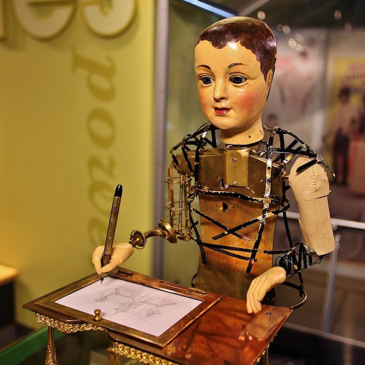

Rory Baxter
This is a description of the author that made this page.
Robots are machines that are capable of acting either fully autonmously, or semi autonomously. Although they don't have to take a humonid form, they often do
The idea of a machine built by humans that acts intelligently has existed for thousands of years. From the Golem in Jewish mythology, to the mechanical servants built by the Greek god Hephaestus, nearly every culture has at some point wanted to create what we would call a today: a robot. As technology progressed, many cultures built simple automata of people and animals that could appear to perform simple tasks (pictured)
During the early to mid 20th Centry an author by the name Isaac Asimov wrote a series of short stories about robots. These stories laid the foundation for how robots are percived in science fiction even today. One of the most important things he did was to establish The Three Laws of Robotics. First introduced in "Runaround", these laws dictate how robots are meant to behave in Asimov's universe
Robots are used for many industrial applications. They are more accurate, faster, and cheaper to run than human labour. Automated factories are popping up all over the world and producing goods at a fraction of the cost of what they were once produced at. These robots could take the form of a mechanical arm moving parts from one conveyer belt to another, or it could be machine carfully selecting parts from a storage area and then taking them to the construction area.